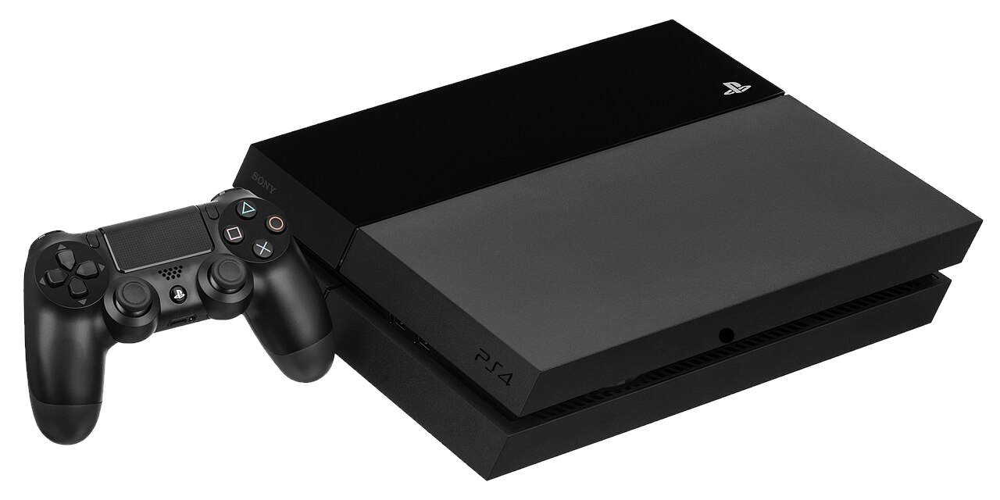

PlayStation 4

Стационарная консоль Sony восьмого поколения.
История
Sony анонсировала новую консоль 20 февраля 2013 года на мероприятии PlayStation Meeting в Нью-Йорке. Презентация заняла два часа, и за это время представители компании рассказали о своём стремлении сделать PS4 лучшим местом для игр, раскрыли технические особенности и, конечно же, показали новые игры: Knack, Killzone: Shadow Fall, DriveClub, Watch Dogs. Само устройство на мероприятие не привезли, но назвали приблизительную дату выхода — конец 2013-го.
Никита Ентус — DTF.
Характеристики
- Производитель
- Sony
- Тип
- Стационарная консоль
- Поколение
- 8-е
- Год выпуска
- 2013
- Тип носителя
- Blu-ray
- Стартовая цена в США (2013)
- 399 $
- Цена в долларах 2025 года
- ≈ 551 $